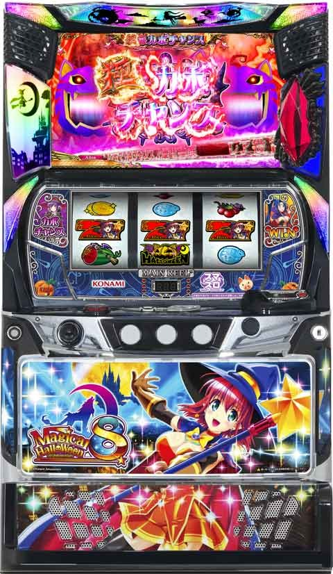

Lマジカルハロウィン8

[天井情報]
777G+α ART当選(2セット以上)
リセット時600G+αに短縮
[リセット判別]
ガックンあり
[有利区間について]
有利区間リセット時はCZ「エンカウントゾーン」に必ず突入するという恩恵アリ。一部で赤エンカウントとなり、成功で最強特化ゾーン「魔界ノ女神降臨」に突入。
狙い目
[リセット狙い]
リセット時は、RT状態内部詠唱スタート
機械割120% 期待値1000円前後
手順
1.リプレイ引く
2.リプレイから30G数える
3.30G消化後リプレイ引く
4.リプレイ揃いやめ。特殊リプレイでARTへ。
天井狙い 370Gから
[ボーナス間天井狙い]
520Gから
3スルー 380Gから
4スルー以降 300Gから
[短縮天井狙い]
積極派 0Gから
慎重派 30Gから
天井到達やCZ成功などのボーナス非経由でのART当選で、ARTがそのまま終了した場合は次回天井が333G+αに短縮。
やめ時
引き戻しゾーン確認してやめ
参考元
基本情報
- メーカー: コナミアミューズメント コナミアミューズメントの掲載機種一覧
- 機械割: 97.7% 〜 109.2%
- 導入開始日: 2023年12月04日（月）
- ゲーム性概要: マジハロ5の遺伝子を継承しつつ、スマスロになって『マジカルハロウィン8』が登場する。


打ち方
打ち方・小役
通常時の打ち方（小役狙い）
［最初に狙う絵柄］ 左リール上段付近に白7を目押し。

［白7下段停止］ 成立役：ハズレorリプレイor共通コインor押し順コインorチャンスリプレイ

［角チェリー停止］ 成立役：弱チェリーor強チェリー

［スイカ上段停止］ 成立役：スイカor特殊役

「レア役の停止形」

左リールBAR狙い（小役狙い）
「最初に狙う絵柄」 左リール枠上〜上段にBARを狙う。

「上段BAR停止時」
成立役…ハズレ／コイン／スイカ／チャンスリプレイ2
右リールをフリー打ちし、スイカテンパイ時は中リールにもスイカを狙う。

「角チェリー停止時」
成立役…弱チェリー／強チェリー

「上段スイカ停止時」
成立役…リプレイ／チャンスリプレイ1 or 3／特殊リプレイ／ART突入リプレイ／スイカ（目押しミス時のみ）
目押しが正確なら、ここからスイカの可能性はナシ。右リールをフリー打ちし、スイカ斜めテンパイ時はチャンスリプレイ2の2確目となる。小Vスイカが特殊リプレイだ。

「レア役の停止形」

左リール2連カボチャ狙い（小役狙い）
「最初に狙う絵柄」 枠内に2連カボチャを狙う。

「下段カボチャ停止時」
成立役…ハズレ／コイン／スイカ／チャンスリプレイ1〜3

「上段スイカ停止時」
成立役…リプレイ／特殊リプレイ／ART突入リプレイ／スイカ
右リールをフリー打ちし、スイカテンパイ時は中リールにもスイカを狙う。

「中段スイカ停止時」
成立役…弱チェリー／強チェリー

「上中段2連カボチャ停止時」
成立役…カボチャ揃い／赤7BIG

「中下段2連カボチャ停止時」
成立役…リプレイ／カボチャ揃い

「レア役の停止形」

逆押しカボチャ狙い（ART中）
ART中のレア役後の前兆中やバトル発展前などは、カボチャ揃いが成立していても狙えカットインが発生しない。もちろん、内部的に成立していれば有効で、狙えば揃えることもできる。
「最初に狙う絵柄」 右リールにBARを狙う。おすすめは中段ビタ押しだが、アバウト目押しでもOKだ。

「枠下カボチャ停止時」
成立役…リプレイ／チャンスリプレイ1〜3／共通コイン／弱チェリー／中段チェリー
基本的に中&左リールはフリー打ちでOK。上段以上にカボチャを押していれば、中段チェリーの可能性はない（中段チェリーはカボチャ揃いと同フラグのため、右リール中段にカボチャが停止する）。

「下段カボチャ停止時」
成立役…スイカ／特殊リプレイ／カボチャ揃い
左リールにカボチャを狙い、上中段に2連カボチャ停止でカボチャ揃いの2確。上段にスイカが止まった場合は中リールにスイカを狙おう。

「中段カボチャ停止時」
成立役…カボチャ揃い／ハズレ
右リール中段カボチャビタ停止なら赤7BIG内部中確定。ハズレ（白7BIG成立時）時は中段まで白7がスベッてくる。アバウト目押しの場合はハズレが出現するが、ART中のハズレは白7BIG確定なので次ゲームから白7を狙えば揃う。

「上段カボチャ停止時」
成立役…ハズレ／リプレイ／強チェリー
右下がりリプレイは赤7BIG内部中確定。

「中段白7停止時」
成立役…ハズレ／リプレイ／強チェリー
左リールに白7を狙い、白7がテンパイしたら中リールにも白7を狙う。

左リール赤7狙い（小役狙い）
「最初に狙う絵柄」 左リール上段に赤7をビタ押し。

「上段赤7停止時」
成立役…ハズレ／コイン／スイカ／弱・強チェリー／チャンスリプレイ2
中リールにスイカを狙い、右リールをフリー打ち。チェリーの強弱は右リール上段にリプレイが止まるかどうかで判別できる。

「中段赤7停止時」
成立役…ハズレ
1コマスベリならボーナス1確。

「下段赤7停止時」
成立役…リプレイ（ボーナス成立中）
必ず右下がりにリプレイが揃う。赤7BIGの1確目。

「中段リプレイ停止時」
成立役…リプレイ／チャンスリプレイ1 or 3
コインやチャンスリプレイ2の可能性がないため、中リールを押してコインが中段に停止した時点でボーナスが確定する。

「レア役の停止例」 チェリーは右リール上段リプレイ停止で弱チェリー、リプレイ以外なら強チェリー。

リーチ目／出目法則
リーチ目
「左リール第1停止時のリーチ目」

ボーナスフラグ判別
ボーナス判別最速手順
【判別パターンは2通り】 左リール下段 or 右リール中段にBARをビタ押しすれば最大2Gでボーナスを判別できる。
【順押し】BARビタ押し手順 左リール下段にBARをビタ押し。4コマスベって赤7が中段に止まればボーナス1確となる。

「中段赤7停止時A」 右リール中段にBARをビタ押し。BARが止まればREG or 白7BIG。

「中段赤7停止時B」 右リール中段まで赤7がスベれば赤7BIG or 白7BIG。赤7BIGを狙って揃わなければ白7BIGを揃えよう。

「右リール中段にBARも赤7も非停止時」 異色BIG確定。

［2確目］ どちらも赤7BIGか異色BIGの2確目。ビタ押しをミスした場合でも停止する可能性がある。

【逆押し】BARビタ押し手順 右リール中段にBARをビタ押しした場合も、BARが止まるか赤7までスベるかでボーナス判別が可能。

「右リール中段BAR停止時」 REGを狙い、揃わなければ白BIG。

「右リール中段赤7停止時」 赤7BIG確定。

「右リール上段赤7停止時」 異色BIG確定。

解析情報通常時
小役関連
通常時・小役確率
| 役 | 確率 |
|---|---|
| チャンスリプレイ1 | 1/89.0 |
| チャンスリプレイ2 | 1/256.0 |
| チャンスリプレイ3 | 1/178.1 |
| スイカ | 1/99.9 |
| 弱チェリー | 1/81.9 |
| 強チェリー | 1/163.8 |
| 特殊リプレイ | 1/5461.3 |
| カボチャ揃い | 1/32768.0 |
| 中段チェリー | 1/32768.0 |
※チャンスリプレイ1…リプ・リプ・コイン、チャンスリプレイ2…小Vor小山コイン、 チャンスリプレイ3…リプ・リプ・スイカ、特殊リプレイ…小Vスイカ
カボチャと中段チェリーは同一フラグで、成立した時点で赤7BIG確定。どちらが出現するかによって、ロングフリーズ期待度が変化する。
内部状態関連
高確＆超高確概要
高確・超高確はおもにチャンスリプレイ成立時や3桁ゾロ目ゲーム数に移行。滞在中にボーナスを引けばART突入のチャンスとなる。 高確or超高確のどちらに移行するかは滞在している通常モードによって変化する。
高確・超高確の性能
| 項目 | 内容 | |
|---|---|---|
| 移行契機 | チャンスリプレイ成立、111G消化ごと、 詠唱チャレンジ失敗後の抽選 | |
| 恩恵 | 高確 | ボーナス当選時のART突入期待度アップ |
| 恩恵 | 超高確 | ボーナス当選でART＋複数ストック確定 |
| 高確or超高確分布 | 通常モードに応じて決定 |
液晶上部のランプが紫に点灯している状態（上位のRT状態滞在時）でボーナスを引いた場合も、ストック2個以上が確定する。
高確・超高確移行率
通常時移行時・111G消化ごと・チャンスリプレイ成立時に（超）高確への移行を抽選。滞在している通常モードによって、高確と超高確の振り分けが変化する。超高確滞在時は、ゲーム数消化 or 111G消化のどちらも約25%で超高確ゲーム数が上乗せされる。
チャンスリプレイ成立時・高確以上移行率
| 滞在モード | 高確へ | 超高確へ | トータル |
|---|---|---|---|
| 通常A | 31.1% | 2.1% | 33.2% |
| 通常B | 27.7% | 5.5% | 33.2% |
| 通常C | 21.8% | 11.4% | 33.2% |
通常移行時＆111G消化ごと・高確以上移行率
| 滞在モード | 高確へ | 超高確へ | トータル |
|---|---|---|---|
| 通常A | 46.9% | 3.1% | 50.0% |
| 通常B | 41.8% | 8.2% | 50.0% |
| 通常C | 32.8% | 17.2% | 50.0% |
高確当選時・高確ゲーム数振り分け
| 滞在モード | 30G | 100G |
|---|---|---|
| 通常A | 96.7% | 3.3% |
| 通常B | 96.3% | 3.7% |
| 通常C | 95.2% | 4.8% |
超高確当選時・超高確ゲーム数振り分け
| 滞在モード | 20G | 50G |
|---|---|---|
| 通常A | 87.5% | 12.5% |
| 通常B | 85.7% | 14.3% |
| 通常C | 81.8% | 18.2% |
超高確中の超高確当選時・上乗せゲーム数振り分け
| 滞在モード | 20G | 50G | 100G |
|---|---|---|---|
| モード不問 | 87.5% | 9.4% | 3.1% |
モード
通常モード概要
設定変更後やART非突入の詠唱チャレンジ終了後に決まるモードで、ART突入までは転落しない（昇格はする）。 複数のモードがあり、滞在モードによって高確当選時の超高確移行率などが変化する。
通常モード振り分け
詠唱チャレンジ失敗時に通常モードを抽選。ART終了時は設定のみを参照して、 ART非当選時（ボーナス後の詠唱失敗）は前回の通常モードと設定を参照して上位のモードへの昇格を抽選 する（通常C滞在時は通常Cをキープ）。 ARTに当選するまで通常モードが転落することはないので、 ボーナス→ART非当選が続いているほど上位のモードにいる可能性がアップ 。 また、ART非当選の連続回数が増えるほど、魔力の吸収量も増える。
特殊なRT状態
RT状態詳細
本機は通常時から複数のRT状態で管理されていて、状態に応じて超高確やエンカウントゾーン移行を抽選（詳細は追って紹介）。ART準備中のようにナビは出ないので、基本的に 自力で6択リプレイを正解（リプ・リプ・スイカ停止で正解）で状態を上げていく ことになる。液晶上では判別しづらいが、リプ・リプ・スイカ停止後にチェリーが停止すれば上位RT移行の期待大。さらにチェリー停止時に液晶上部ランプが発光すれば上位のRT状態滞在濃厚となる。 この 上位RT状態から移行した超高確は30G継続して、通常の超高確（チャンスリプレイやゲーム数消化契機）とは異なり、カボチャ揃いが成立する、ハズレが成立しない（択コインこぼしはある）状態 に変化。ハズレがないので白7以外のボーナスが成立した場合、エンカウントゾーンに突入して終了後にボーナスが告知される。もちろん通常の超高確と同じくボーナスが成立した時点でARTストック2個以上も確定する。

「超高確突入目」

「エンカウントゾーン突入目」


魔界＆極魔界
魔界＆極魔界概要
スイカの一部で移行する30G固定の状態で、滞在中にボーナスを引けばスーカボが確定。 魔界突入時の一部で、ボーナス当選＝スーカボ、さらにボーナス以外でもスーカボのチャンスとなる極魔界へ移行する（スーカボ突入のトータル期待度は約50%）。 極魔界はARTが終了しても再突入する可能性があるうえ、再突入した場合はスーカボ期待度80%超になる。 滞在中はボーナス当選・天井到達・超高確突入目やエンカウントゾーン突入目停止でスーカボが確定 。 超高確突入目かエンカウントゾーン突入目停止時は詠唱チャレンジを経由しないで直接スーカボに移行する。 天井到達時は、滞在しているRTによっては直接スーカボに移行したり、詠唱チャレンジに移行したりする。
魔界・極魔界の性能
| 項目 | 内容 | |
|---|---|---|
| 突入契機 | スイカ時の抽選 | |
| 恩恵 | 魔界 | ボーナス当選などでスーカボ |
| 恩恵 | 超魔界 | ボーナス当選などでスーカボ、毎ゲームスーカボ抽選、 ART終了後の再突入抽選もアリ |
［魔界ステージ］

［極魔界ステージ］ 終了時のキメラバトルで消化中のスーカボ抽選の結果を告知。

また、極魔界はARTが終了しても再突入する可能性がある。
スイカ成立時・魔界移行率
| ボーナス | 移行率 |
|---|---|
| ボーナス非当選 | 1.2% |
| 赤7BIG当選 | 1.2% |
| 白7BIG当選 | 0.8% |
| 異色BIG当選 | 0.4% |
BIG当選時に魔界に当選した場合も、魔界中のボーナス扱いになるのでスーカボ確定！
極魔界中・スーカボ当選率
| 役 | 初回突入時 | ART後の復帰時 |
|---|---|---|
| コイン | 0.4% | 8.6% |
| スイカ | 25.0% | 50.0% |
| チャンスリプレイ | 12.5% | 25.0% |
| 弱チェリー | 12.5% | 25.0% |
| 強チェリー | 50.0% | 75.0% |
| ボーナス | 100% | 100% |
トータルのスーカボ期待度は初回が約50％、2回目以降は約80%となる。
エンカウントゾーン
エンカウントゾーン概要
通常時やボーナス・ART終了後に突入する可能性があるCZで、滞在中は 成立役に応じてエンカウント（魔獣出現）を抽選して、当選すれば次ゲームで魔獣が出現 。魔獣出現ゲームの成立役抽選で魔獣を撃破すればARTをストックできる。

「魔獣は全部で4種類」 登場する敵によって撃破期待度が変化。キメラは期待度が高いだけでなく、撃破すれば「魔界ノ女神降臨」突入のチャンスとなる。
魔獣ごとの期待度
| 魔獣 | 期待度 |
|---|---|
| イノシシ型魔獣 | 低 |
| コウモリ型魔獣 | ↓ |
| もふもふ型魔獣 | ↓ |
| キメラ | 高 |
※もふもふとキメラの期待度はほぼ同じだが、キメラは魔界ノ女神降臨のチャンス
［イノシシ型魔獣］

［コウモリ型魔獣］

［もふもふ型魔獣］

［キメラ］

［キメラ高確状態］ 突入時のタイトルが赤色だった場合は、キメラが高確率で出現する状態に変化。このキメラ高確中はキメラ撃破時の約50%で魔界ノ女神降臨に当選する。

［最終ゲームの抽選］ 最終ゲームでエンカウントした場合は液晶上では何も出ないが、結果に応じた抽選を受けられるので無駄引きにはならない。
魔獣出現時の割合と撃破期待度
| 魔獣 | 割合 | 期待度 |
|---|---|---|
| イノシシ型魔獣 | 46.62% | 約30% |
| コウモリ型魔獣 | 31.32% | 約35% |
| もふもふ型魔獣 | 20.66% | 約55% |
| キメラ | 1.40% | 約50% |
※割合は赤背景も含むトータルの数値
エンカウントゾーン中は通常・高確・超高確の3種類が存在し、上位の状態ほどレア役以外で上位の魔獣が出現しやすい（赤背景は超高確示唆）。突入時に状態が振り分けられ、通常だった場合は魔獣を1体撃すれば高確に変化する（その他の契機では転落も昇格もしない）。
初期内部状態振り分け
| 状態 | 振り分け |
|---|---|
| 通常 | 約40% |
| 高確 | 約50% |
| 超高確 | 約10% |
魔獣は内部的に3種類で、当選した魔獣によってどの魔獣が出現するかが決まる（イノシシ型、キメラ型など）。必ずしも当選した魔獣が演出に出現するわけではなく、内部的にはキメラだが見た目はイノシシといったケースもある（キメラ出現時は内部的にも必ずキメラ）。
［通常中］魔獣出現率
| 魔獣 | その他 | コイン | スイカ | |
|---|---|---|---|---|
| デフォルト | ー | 7.8% | 62.5% | |
| チャンス | 1.6% | 0.4% | 25.0% | |
| キメラ | ー | ー | 12.5% | |
| トータル | 1.6% | 8.2% | 100% | |
| 魔獣 | チャンスリプレイ ・弱チェリー | 強チェリー・特殊リプレイ ・中段チェリー | ||
| デフォルト | 87.5% | ー | ||
| チャンス | 11.7% | 93.8% | ||
| キメラ | 0.8% | 6.3% | ||
| トータル | 100% | 100% |
［高確中］魔獣出現率
| 魔獣 | その他 | コイン | スイカ | |
|---|---|---|---|---|
| デフォルト | ー | 34.4% | 62.5% | |
| チャンス | 6.3% | 6.3% | 25.0% | |
| キメラ | ー | ー | 12.5% | |
| トータル | 6.3% | 40.6% | 100% | |
| 魔獣 | チャンスリプレイ ・弱チェリー | 強チェリー・特殊リプレイ ・中段チェリー | ||
| デフォルト | 87.5% | ー | ||
| チャンス | 11.7% | 93.8% | ||
| キメラ | 0.8% | 6.3% | ||
| トータル | 100% | 100% |
［超高確中］魔獣出現率
| 魔獣 | その他 | コイン | スイカ | |
|---|---|---|---|---|
| デフォルト | ー | 12.5% | 62.5% | |
| チャンス | 6.3% | 18.8% | 25.0% | |
| キメラ | 6.3% | 18.8% | 12.5% | |
| トータル | 12.5% | 50.0% | 100% | |
| 魔獣 | チャンスリプレイ ・弱チェリー | 強チェリー・特殊リプレイ ・中段チェリー | ||
| デフォルト | 87.5% | ー | ||
| チャンス | 11.7% | 93.8% | ||
| キメラ | 0.8% | 6.3% | ||
| トータル | 100% | 100% |
魔獣ごとの撃破率
| 魔獣 | その他 | コイン | レア役 |
|---|---|---|---|
| デフォルト | 3.1% | 50.0% | 100% |
| チャンス | 19.9% | 87.5% | 100% |
| キメラ | ー | 100% | 100% |
チャンスリプレイやチェリーは押し順リプレイA〜Cで同じ出目が出現するが、この場合はその他として抽選される。デフォルト・チャンス魔獣は撃破でカボチャンスをストック。キメラは滞在状態に応じて恩恵の割合が異なる。
通常時のエンカウントゾーン突入経路
◎突入経路1
リプ・リプ・スイカ→弱チェリー→コイン・コイン・スイカと出現すると、超高確（作戦室）へ移行。このRTは完走型ARTと同様のRT状態となっていて、白7以外のボーナスが当選した場合は30Gを消化するまで揃えることができない。 ボーナス当選後はエンカウントゾーンが告知され、エンカウントゾーン終了後にボーナスを揃えることができる 。ボーナス以外に、カボチャリプレイが成立した場合もストック＋エンカウントゾーン確定（フェイクカットインなし）。
RTの残りゲーム数が少ない場合は、エンカウントゾーンが告知されない可能性があるが、エンカウントゾーンに滞在していたゲーム数分は、正しく抽選がおこなわれている。
◎突入経路2
リプ・リプ・スイカ→強チェリー→エンカウントゾーン突入目と出現した場合、エンカウントゾーンが直撃。こちらは極モード用のRT状態のため、 レア役確率がアップ＝ストック性能がアップ している。
RT状態の移行フローはコチラ
「注意点」
ボーナス同時当選のチェリーの場合、液晶上部ランプが紫に点灯することがあるが、ボーナス当選後のため、コイン・コイン・スイカなどの本来は超高確移行出目が停止してもエンカウントゾーン突入とはならない。
ART終了時のエンカウントゾーン突入経路
ART終了時やART中のボーナス終了後に、エンカウントゾーンに突入する可能性がある（本来なら詠唱チャレンジへ突入するタイミング）。突入経路は有利区間を終了せず入る場合（条件1）と有利区間を終了する場合（条件2）の2パターン。
エンカウントゾーン確率
◎条件1
ART連チャン中のストックが0になったタイミングで、エンカウントゾーンへの突入を抽選。もちろん、エンカウントゾーン突入が決まった後にストックを獲得する可能性はあるので、エンカウントゾーン突入＝ストック0が確定するわけではない。
◎条件2
現在持っているARTのストック数と差枚数を参照して、ARTセット終了時にエンカウントゾーンへの突入を抽選。基本的にはストック数が少なく、プラス枚数が多いほど突入しやすくなるので、有利区間を終了すると明確に損をすると感じるタイミングでエンカウントゾーンへ突入することはない。
キメラ撃破時の恩恵振り分け
| 恩恵 | 通常中 | 高確中 | 超高確中 |
|---|---|---|---|
| キンカボ | 98.4% | 96.9% | 33.6% |
| 悪キンカボ | 1.2% | 2.7% | 16.4% |
| 魔界ノ女神降臨 | 0.4% | 0.4% | 50.0% |
キメラ以外の魔獣は撃破でカボチャンスをストック。
魔力吸収
魔力吸収概要
ボーナス間ハマリなどで蓄積するポイントで、一定数貯まるとボーナス当選時に魔力解放が発動して、上位ボーナス（BIGならエピソードボーナス、REGならメモリアルボーナス）に変換される。ボーナス成立時に魔力解放の有無を抽選（見た目上はボーナスを揃えた時に発動）。 魔界でのボーナス・ロングフリーズ・エピソードボーナス当選時は魔力が解放されず、次回ボーナスまで維持される。
魔力吸収時は液晶の右側にあるレッドアイランプに魔力が吸収される。

魔力解放発動時のボーナス昇格例
| 当選ボーナス | 発動後に昇格するボーナス |
|---|---|
| BIG | エピソードボーナス |
| REG | 毎ゲームまじかるちゃんすが発生するメモリアルボーナス |
魔力吸収契機例
| No. | 契機 |
|---|---|
| 1 | ゲーム数ハマリ（333G以降の111G消化ごと） |
| 2 | 詠唱チャレンジ連続失敗時（ART連続非突入） |
| 3 | ART駆け抜け（単発終了） |
| 4 | レア役（ボーナス非当選） |
ボーナス同時当選
［設定差なし］ボーナス同時当選期待度
| 役 | 期待度 |
|---|---|
| 共通コイン | 0.2% |
| チャンスリプレイ1 | 5.4% |
| チャンスリプレイ2 | 12.5% |
| チャンスリプレイ3 | 2.2% |
| スイカ | 14.0% |
| 弱チェリー | 3.0% |
| 強チェリー | 25.0% |
| 特殊リプレイ | 100% |
| カボチャ揃いor中段チェリー | 100% （フリーズorエピソードボーナス） |
※チャンスリプレイ1…リプ・リプ・コイン、チャンスリプレイ2…小Vor小山コイン、 チャンスリプレイ3…リプ・リプ・スイカ、特殊リプレイ…小Vスイカ
天井
天井ゲーム数振り分け
| 天井 | 振り分け |
|---|---|
| 333G | 2.7% |
| 444G | 0.4% |
| 555G | 5.1% |
| 666G | 1.6% |
| 777G | 90.2% |
基本的には詠唱チャレンジ終了時に全設定共通の振り分けで天井ゲーム数を決定するが、前回が天井到達やエンカウントゾーン経由など、 ボーナス非経由でARTに当選していた場合、ART中にボーナスを引いていなければ次回の天井は333G になる。
フリーズ
ロングフリーズ発生率
| 項目 | 発生率 | |
|---|---|---|
| 発生率 | 下記以外 | 赤7BIG当選時の約0.8% |
| 発生率 | カボチャ揃い | 約14% |
| 発生率 | 中段チェリー | 約25% |
| 発生確率 | 約1/65536 |
ロングフリーズは通常時のみ発生する可能性があり、赤7BIG＋スーカボが確定。カボチャ揃い・中段チェリーでフリーズ非発生時はエピソードボーナスになる。 発生タイミングは内部的にフリーズ当選後、最初の赤7を揃えられるゲームのレバーON時もしくは、赤7BIG開始後1G目のいずれか。一度リールが回り始めてからフリーズするパターンもある。
解析情報ボーナス時
BIG＆エピソードボーナス
BIG概要
BIGは消化ゲーム数（獲得枚数）が違うだけで、消化中のカボチャ揃い・まじかるちゃんすの抽選値は共通。もちろんゲーム数が多いBIGほど抽選回数が増えるためARTに突入しやすくなる。

BIG概要
| 項目 | 内容 | |
|---|---|---|
| 獲得枚数 | 赤7BIG | 203枚 |
| 獲得枚数 | 白7BIG | 175枚 |
| 獲得枚数 | 異色BIG | 154枚 |
| 消化中の抽選 | カボチャ揃い、まじかるちゃんす | |
| 終了後 | 詠唱チャレンジへ |
［カボチャ揃い］

［まじかるちゃんす］

エピソードボーナス概要
まじかるちゃんすが確定しているBIGで、終了後のまじかるちゃんすで悪カボ以上を獲得できる。

エピソードボーナス概要
| 項目 | 内容 |
|---|---|
| 獲得枚数 | 154～203枚 |
| 消化中の抽選 | カボチャ揃い、まじかるちゃんす |
| 特典 | 終了後に必ずまじかるちゃんすが発生して 悪カボ以上（悪カボ複合ART）に突入 |
エピソードボーナス契機
| 項目 | 内容 |
|---|---|
| 通常時 | 赤7BIG当選時の一部 |
| 通常時 | カボチャ揃い・中段チェリーは フリーズorエピソードボーナス |
| ART中 | BIG当選時の一部 |
| ART中 | 異色BIG＜白7BIG＜赤7BIG（※） |
※ART中もカボチャ揃い・中段チェリーはエピソードボーナス確定
［もちろんカボチャ揃いもアリ！］

［終了後は悪モードへ］

まじかるちゃんす発生率期待度序列
| BIG | 序列 |
|---|---|
| 下記以外のBIG | 低 |
| スイカ＋BIG | ↓ |
| （超）高確中のスイカ以外＋BIG | ↓ |
| （超）高確中のスイカ＋BIG | 高 |
カボチャ揃い確率

BIG中・カボチャ揃い確率
| カボチャ | 確率・期待度 |
|---|---|
| フェイク | 1/17.1 |
| 揃い | 1/256.0 |
| トータル | 1/16.0 |
| カットイン発生時の期待度 | 6.3% |
BIG中にカボチャが揃えばARTをストック。キンカボ中であればストック5個以上が確定する。悪モード中は悪〜ぷする可能性もあり、悪キンカボ中であればストック5個がループ抽選されるのでかなりアツい。
通常時の赤7BIG・フリーズorエピソードボーナス発生率
| 当選時の結果 | 中段チェリー契機 | その他契機 |
|---|---|---|
| フリーズ | 19.5% | 0.8% |
| エピソードボーナス | 80.5% | 2.7% |
通常時以外のBIG成立時・エピソードボーナス当選率
| ボーナス | 当選率 |
|---|---|
| 赤7BIG | 20.3% |
| 白7BIG | 10.6% |
| 異色BIG | 3.1% |
※中段チェリー契機はエピソードボーナス確定
エピソードボーナス当選時時・ARTストック種別振り分け
| ART | 振り分け |
|---|---|
| 悪カボ | 96.9% |
| 極悪カボ | 2.0% |
| 悪キンカボ | 0.8% |
| 究極悪王カボ | 0.4% |
殲滅ボーナス
殲滅ボーナス概要

マジハロ5の錬金ボーナスと類似したボーナスで、消化中は成立役＆攻撃キャラの組み合わせで敵を撃破していき、 最終ゲームで撃破数を参照してART突入をジャッジ 。キャラの登場順や相性のいい小役の組み合わせは画面右下に表示されている。 ARTへ突入しなくても撃破数はART突入まで引き継がれる 。
殲滅ボーナス概要
| 項目 | 内容 |
|---|---|
| 獲得枚数 | 42枚 |
| 消化中の抽選 | 毎ゲーム成立役に応じて魔獣を撃破 |
| 最終ゲームのジャッジ | 撃破数を参照してART当選をジャッジ |
| ART当選時の特典 | ART＋極高確 |
「100体撃破で見た目はレギュラーボーナスに！」 終了前に100体撃破した場合は見た目上レギュラーボーナスに移行して、内部的に極高確のゲーム数上乗せが抽選される。ちなみに、100体撃破時の撃破数余剰分（オーバーキル分）は極高確ゲーム数に還元抽選されるため無駄にはならない。
キャラと成立役の組み合せ別期待度
| キャラ | コイン | リプレイ | レア役 |
|---|---|---|---|
| アリス | ★3 | ★3 | ★3 |
| ローズ | ★2 | ★2.5 | ★3 |
| フロスト | ★１ | ★１ | ★５ |
| ノワール | ★４ | ★3.5 | ★4.5 |
| ルラ | ★2 | ★1 | ★3 |
| ルル | ★1 | ★2 | ★3 |
※アリスは最終ゲームのみ
［攻撃キャラはコイン揃いで進行］ コインが揃うと次のキャラへ、コイン以外（成立役はリプレイ・チャンリプレイ・弱チェリー）の場合は同キャラの連続攻撃になる。 ラストのキャラはアリス固定で、コインが揃うとジャッジへ移行する。

［ARTジャッジ］ ジャッジ成功でARTに突入（ラストは必ずアリス登場）。マジハロ5と同じく、BIG終了後にも内部的に撃破数を参照してジャッジがおこなわれるため、見た目上契機不明でARTストック＋極高確を獲得するパターンがある。

殲滅ボーナス中・キャラ出現割合
| キャラ | 割合 |
|---|---|
| ローズ | 20.3% |
| フロスト | 15.6% |
| ノワール | 1.6% |
| ルラ | 31.3% |
| ルル | 31.3% |
アリスが出現するのは6G目のみで、1〜5人目が上記の割合で出現。同一キャラが複数出ることもある。
殲滅ボーナス中・小役確率
| 役 | 確率 |
|---|---|
| コイン | 1/1.3 |
| リプレイ | 1/6.4 |
| チャンスリプレイ合算 | 1/31.9 |
| 弱チェリー | 1/42.7 |
| コイン以外合算 | 1/4.9 |
コイン以外をどのキャラで引けるかが重要。
規定撃破数振り分け
有利区間移行時やART終了後などに、殲滅ボーナスでART当選に必要な初期撃破数を抽選。規定撃破数は25体〜100体まであり、高設定ほど少ない数が選ばれやすい。
ボーナス成立時の撃破率
ボーナスに当選したタイミングで、規定撃破数の減算を抽選。（超）高確中は5体以上が減算される。 殲滅ボーナスだけでなく、BIGでも同様の減算抽選がおこなわれ、BIGに当選した時点で内部的に全撃破になっていた場合もAT突入となり、見た目上は謎ストック＋極高確という形になる。
ボーナス当選時・撃破数振り分け
| 撃破数 | 通常中 | 高確・超高確中 |
|---|---|---|
| 1体 | 87.5% | ー |
| 5体 | 11.7% | 87.5% |
| 10体 | 0.8% | 12.5% |
キャラ＆成立役別の撃破数振り分け
登場キャラと毎ゲームの成立役を参照して、敵の撃破を抽選。全撃破した時点でART確定＋極高確ゲーム数5Gを獲得する。以降は約20体撃破ごとに極高確ゲーム数が1Gずつプラスされていく。
［アリス］成立役別の撃破数振り分け
| 撃破数 | コイン | リプレイ | レア役 |
|---|---|---|---|
| 1体 | ー | ー | ー |
| 5体 | ー | 48.4% | ー |
| 10体 | 87.5% | 48.4% | 87.5% |
| 20体 | 12.1% | 3.1% | 12.1% |
| 100体 | 0.4% | ー | 0.4% |
［ローズ］成立役別の撃破数振り分け
| 撃破数 | コイン | リプレイ | レア役 |
|---|---|---|---|
| 1体 | ー | ー | ー |
| 5体 | 100% | 48.4% | ー |
| 10体 | ー | 48.4% | 87.5% |
| 20体 | ー | 3.1% | 12.1% |
| 100体 | ー | ー | 0.4% |
［フロスト］成立役別の撃破数振り分け
| 撃破数 | コイン | リプレイ | レア役 |
|---|---|---|---|
| 1体 | 100% | 100% | ー |
| 5体 | ー | ー | ー |
| 10体 | ー | ー | ー |
| 20体 | ー | ー | ー |
| 100体 | ー | ー | 100% |
［ノワール］成立役別の撃破数振り分け
| 撃破数 | コイン | リプレイ | レア役 |
|---|---|---|---|
| 1体 | ー | ー | ー |
| 5体 | ー | ー | ー |
| 10体 | ー | ー | ー |
| 20体 | 87.5% | 100% | ー |
| 100体 | 12.5% | ー | 100% |
［ルラ］成立役別の撃破数振り分け
| 撃破数 | コイン | リプレイ | レア役 |
|---|---|---|---|
| 1体 | ー | 100% | ー |
| 5体 | 100% | ー | ー |
| 10体 | ー | ー | 87.5% |
| 20体 | ー | ー | 12.1% |
| 100体 | ー | ー | 0.4% |
［ルル］成立役別の撃破数振り分け
| 撃破数 | コイン | リプレイ | レア役 |
|---|---|---|---|
| 1体 | 100% | ー | ー |
| 5体 | ー | 100% | ー |
| 10体 | ー | ー | 87.5% |
| 20体 | ー | ー | 12.1% |
| 100体 | ー | ー | 0.4% |
まじかるちゃんす
どこまじ発生率＆ストック振り分け
通常時のボーナス当選時に、設定を参照してどこまじの発生を抽選。当選すればカボチャンスストックを獲得するが、必ずまじかるちゃんすが発生するわけではない。また、高確や超高確中に引いたボーナスでストックした場合にまじかるちゃんすが発生することもある。
まじかるちゃんす発生率
滞在状態や同時当選契機によって、ボーナス中のまじかるちゃんす発生率が異なる。
ボーナス当選タイミング＆契機別 まじかるちゃんす発生確率
| 内部状態 | 当選契機 | 確率 |
|---|---|---|
| 低確 | スイカ | 1/97.5 |
| 高確 | スイカ以外 | 1/97.5 |
| 高確 | スイカ | 1/64.0 |
| ART中 | 1/48.5 | |
| エピソードボーナス中 | 1/387.9 |
恩恵振り分け
まじかるちゃんす発生時は、状態に応じて恩恵の振り分けが変化。ループ率系が選択された場合、ストック1個保証に加えて、ループ抽選をおこなった結果をストックする。キング系は悪キンカボや究極悪王カボが選択される可能性あり。
まじかるちゃんす発生時の恩恵振り分け
| 恩恵 | 低確中 | 高確中 | スイカ契機 |
|---|---|---|---|
| 3.1％ループ | 99.6% | 87.5% | 93.8% |
| 25％ループ | ー | ー | 5.9% |
| 50％ループ | ー | 11.7% | ー |
| 80％ループ | ー | 0.4% | ー |
| キング系 | 0.4% | 0.4% | 0.4% |
| 恩恵 | 高確中の スイカ契機 | ART中のBIG中 | ART中のREG中 ／キンカボ中 |
| 3.1％ループ | 50.0% | 71.1% | 60.9% |
| 25％ループ | 28.1% | 12.5% | 25.0% |
| 50％ループ | 14.1% | 12.5% | 12.5% |
| 80％ループ | 6.3% | 3.1% | 1.6% |
| キング系 | 1.6% | 0.8% | ー |
| 恩恵 | エピソードボーナス中 | ||
| 悪カボ1個 | 96.9% | ||
| 悪カボ2個 | 3.1% |
キング系選択時・種別振り分け
| 種別 | 振り分け |
|---|---|
| キンカボ | 50.0% |
| 悪キンカボ | 37.5% |
| 究極悪王カボ | 12.5% |
まじかる～ぷ中（悪モード中）・ループ率振り分け
| ループ率 | 振り分け |
|---|---|
| 33％ | 60.0% |
| 50％ | 30.0% |
| 80％ | 10.0% |
※通常時は50%固定、キンカボ中やエピソードボーナス中は33%固定なので 上記振り分けはART中に引いたボーナス中のもの
まじかる〜ぷはボーナスが終了しても継続率に漏れるまでまじかるちゃんすが継続するので、ボーナス終盤で当選してもムダにはならない。
詠唱チャレンジ
詠唱チャレンジ概要
ボーナス後やARTセット終了後に突入する、シリーズおなじみのARTをかけたゾーンで、 6択リプレイの押し順に成功するか、規定ゲーム数（最大10Gのミッション）6択リプレイが成立しなければARTが確定 する。 規定ゲーム数クリア後（EXミッション）は6択リプレイ成立まで、約1/2でART（カボチャンス）セットストックを獲得、レア役ならARTストックが確定。 マジハロ5にあったSPミッションや、新要素の極ミッションも搭載している。

［リプレイのボーナス確定法則］ 押し順リプレイとチャンリプレイ（リプ・リプ・コイン）以外のリプレイフラグはボーナス確定となる。
詠唱チャレンジ概要
| 項目 | 内容 |
|---|---|
| 突入ルート | ボーナス後、ART終了後 |
| 消化中の抽選 | 6択当て成功or規定ゲーム数消化でART当選 |
| その他 | ミッションの内容で成功時の恩恵が変化 |
［6択当て］ リプ・リプ・スイカ停止で成功。

［EXミッション］ 規定ゲーム数消化で成功した場合に突入する。

［SPミッション］ 規定ゲーム数、6択リプレイを引かなければカボチャンス・スーカボ以外のARTストックを獲得。クリア後は再度SPミッションが発動する。

［極ミッション］ 6択リプレイが成立する状態（ミッション）でチャンスリプレイA（リプ・リプ・コイン）を引くと突入。次ゲームに 「1/2.5で成立する6択リプレイを引けば成功」 となり、ART＋レア役確率が約1/7にアップする極モードに突入する。 すでに当選しているARTが極モードだった場合は、極モードが次回に持ち越しされる。

ミッションゲーム数振り分け
| ゲーム数 | 振り分け |
|---|---|
| 1G | 0.4% |
| 3G | 2.0% |
| 5G | 7.4% |
| 7G | 10.2% |
| 10G | 80.0% |
今作は、コインこぼしまでの間に成立した小役でのミッションゲーム数短縮抽選はない。ミッションをクリアした後のSPミッションゲーム数も振り分けは共通だ。
SPミッションクリア時の報酬振り分け
| ゲーム数 | 振り分け |
|---|---|
| キンカボ | 25.0% |
| 悪カボ | 18.8% |
| 極カボ | 31.3% |
| 悪キンカボ | 6.3% |
| 極キンカボ | 11.7% |
| 極悪カボ | 6.3% |
| 究極悪王カボ | 0.8% |
極高確ゲーム数獲得抽選
コインこぼし待ち状態を含め、詠唱チャレンジ中のスイカとチャンスリプレイ成立時に、極高確の獲得を抽選する（チェリーはボーナス確定）。
詠唱チャレンジ中・極高確ゲーム数獲得率
| 極高確ゲーム数 | スイカ | チャンスリプレイ |
|---|---|---|
| 1G | ー | 2.7% |
| 3G | 25.0% | 0.4% |
ART準備中
ART準備中のRT移行抽選
詠唱チャレンジ詠の6択正解（リプ・リプ・スイカ）後は1段階昇格RT（準備状態）に移行。この準備状態で 弱チェリーor強チェリー（RT移行リプレイ）のどちらを引くかで次段階のRTが変化 する。 簡単に説明すると、弱チェリーがデフォルトで弱準備RTへ、強チェリーが出れば必ず極モードに移行する強準備RTへ移行（移行パターンの詳細はフローを参照）。 また、1段階昇格RTでは「リプ・リプ・スイカ」を引くと極高確のゲーム数獲得を抽選する。 極高確を獲得すると、獲得ゲーム数が尽きるまで弱チェリーを回避してくれるので極モード突入のチャンス となる。

［炎エフェクトで極高確滞在を示唆］ 1段階昇格RTでリプ・リプ・スイカ後に炎エフェクトが発生すれば極高確へ移行。エフェクトが大きいほど極高確の残りゲーム数が多い。

RT遷移の流れは通常時と同じ。

「弱準備RTでの極モード直撃抽選」 マジハロ5のARTゲーム数30Gor100Gの分岐と同じ流れで、ART移行時（液晶で「いっくよ〜！」）の出目が極モード移行出目なら極モードへ移行する。
［極モード突入目］

カボチャンス（カボチャン）
カボチャンス概要
30G/セットの完走型ARTで、白7BIG以外は終了後に告知される（カウントダウン開始前の準備状態ではどのボーナスも揃えられる）。 消化中、赤7頭のBIG成立後は内部的にカボチャ高確やレア役高確へ移行。 ラスト4G間はジャッジバトルが発生して、勝利すればボーナス（悪モード滞在中以外）。バトルの相手がキメラだった場合は勝利すれば悪モード（悪カボチャンス）が発動する。

カボチャンス（カボチャン）概要
| 項目 | 内容 |
|---|---|
| タイプ | 完走型ART |
| 当選契機 | 詠唱チャンレンジ成功など |
| 1Gあたりの純増 | 約1枚 |
| 1セットのゲーム数 | 30G |
| 消化中の抽選 | ARTストック（カボチャ揃い） |
［ランプの色でボーナス期待度を示唆］ 液晶左側のランプがランクアップするほどボーナス期待度がアップ。レア役時はランクアップしやすいため、レア役高確中はボーナス成立を事前に察知しやすくなる。

［カボチャ高確とレア役高確］ カボチャ高確中は 約1/16でカボチャが揃う ためARTストックのチャンス。レア役高確中はレア役確率が上がってもレア役でストックするわけではないが、極モード中はこの状態に行けばさらにレア役確率が上がり、レア役時にストックが抽選されるようになる。

［カボチャが揃えばARTストック］ 1回揃えばカボチャンス以上を1個ストック、2回揃えばキンカボ以上をストック。マジハロ5同様、3回目以降は基本的に1回目と同じ振り分けでストックされる!?

［ジャッジバトル］ イノシシ型魔獣＜コウモリ型魔獣＜もふもふ魔獣＜キメラの順に期待度に高い。

［キメラは別格］ キメラに関してはART中に抽選されていて、ボーナス成立中は出現期待度がアップする。

キメラバトル抽選
キメラバトルの抽選はマジハロ5のクロニクルバトルと同じく、「キメラバトルに当選してからボーナスに当選」or「ボーナスに当選してからキメラバトルに当選」のどちらでも勝利となる（キメラバトルにのみ当選していた場合はバトル敗北）。 キメラバトル当選後、 再度キメラバトルに当選した場合は内部的に「勝利時に貰えるストック」の個数が増加 。 また、カボチャンス開始時の約5%で突入するキメラ高確（赤背景に変化）も存在する。
キメラバトル勝利時の報酬一覧
| 消化中のART | 報酬のART |
|---|---|
| カボチャンス | 悪カボ |
| キンカボ | 悪キンカボ |
| 悪カボ | 悪カボ |
| 極カボ | 極悪カボ |
| 悪キンカボ | 悪キンカボ |
| 極悪カボ | 極悪カボ |
| 極キンカボ | 究極悪王カボ |
| 究極悪王カボ | 究極悪王カボ |
キメラバトル当選率
| 状態 | 当選率 |
|---|---|
| 下記以外 | 0.4% |
| キメラ高確中 | 12.5% |
| ボーナス成立後 | 1.6% |
※ボーナス同時当選時のレア役はボーナス成立前扱い
ボーナス成立後に引いた中段チェリーや特殊リプレイはキメラバトル確定。当選したキメラバトルの回数はストックされていき、ストックが残っている限りART終了時のバトルがキメラバトルになる（見た目上、キメラバトルとならないケースあり）。
［キメラ高確］ 赤背景になればキメラ高確！

ART中のハズレ
ART中はハズレが出現しないため、白7BIGを除くボーナス当選後も、ART終了までボーナスを揃えることができない。白7BIGだけは例外で、当選後はハズレが出現するのでART中に揃えることが可能（告知も発生）となる。
ART開始前のリプレイフラグの説明
| リプレイフラグ | 説明 |
|---|---|
| 押し順リプレイA | ⚫︎ ART準備中はリプレイ揃いorリプ・リプ・スイカ |
| 押し順リプレイA | ⚫︎ 弱準備中は成立で1段階昇格RTへ戻る |
| 押し順リプレイB | ⚫︎ ART準備中はリプレイ揃いor（弱・強）チェリー |
| 押し順リプレイB | ⚫︎ 強準備中はナビ通りに押せば 強チェリー入賞（強準備中をキープ） |
| 押し順リプレイC | ⚫︎ ART準備中はリプレイ揃いor リプ・リプ・スイカor弱チェリー |
| 30リプレイ | ⚫︎ 弱準備中はコイン・コイン・リプが停止して 通常ARTがスタート |
| 極リプレイ | ⚫︎ 極モードのARTがスタート |
| 極リプレイ | ⚫︎ 弱準備・強準備共通でこれを引けば極モード直撃 |
ART開始前・リプレイフラグ確率
| リプレイフラグ | ART準備中 | 弱準備中 | 強準備中 |
|---|---|---|---|
| 押し順リプレイA | 1/27.0 | 1/24.8 | ー |
| 押し順リプレイB | 1/15.0 | ー | 1/5.5 |
| 押し順リプレイC | 1/3.4 | ー | ー |
| 30リプレイ | ー | 1/2.8 | ー |
| 極リプレイ | ー | 1/344.9 | 1/4.6 |
カボチャンス中・リプレイ確率
| リプレイ | REG成立後or ボーナス非当選 | 異色BIG成立後 | 赤7BIG成立後 |
|---|---|---|---|
| カボチャ揃い | 1/198.6 | 1/198.6 | 1/16.1 |
| 弱チェリー | 1/81.9 | 1/35.9 | 1/35.9 |
| 強チェリー | 1/109.2 | 1/59.6 | 1/59.6 |
| チャンスリプレイ1 | 1/19.5 | 1/12.1 | 1/12.1 |
| チャンスリプレイ2 | 1/1024.0 | 1/1024.0 | 1/1024.0 |
| チャンスリプレイ3 | 1/8192.0 | 1/8192.0 | 1/8192.0 |
| 特殊リプレイ | 1/5461.3 | 1/468.1 | 1/468.1 |
| レア役合算 | 1/11.9 | 1/7.1 | 1/7.1 |
極モード中・リプレイ確率
| リプレイ | REG成立後or ボーナス非当選 | 異色BIG成立後 | 赤7BIG成立後 |
|---|---|---|---|
| カボチャ揃い | 1/198.6 | 1/198.6 | 1/16.1 |
| 弱チェリー | 1/31.6 | 1/21.2 | 1/21.2 |
| 強チェリー | 1/30.5 | 1/24.7 | 1/24.7 |
| チャンスリプレイ1 | 1/14.9 | 1/10.2 | 1/10.2 |
| チャンスリプレイ2 | 1/1024.0 | 1/1024.0 | 1/1024.0 |
| チャンスリプレイ3 | 1/8192.0 | 1/8192.0 | 1/8192.0 |
| 特殊リプレイ | 1/5461.3 | 1/468.1 | 1/468.1 |
| レア役合算 | 1/7.0 | 1/5.0 | 1/5.0 |
準備状態の詳細はコチラ
リプレイフラグ・ボーナス同時当選期待度
| 役 | カボチャンス中 | 極モード中 |
|---|---|---|
| 弱チェリー | 3.0% | 1.2% |
| 強チェリー | 16.7% | 4.7% |
| チャンスリプレイ1 | 1.2% | 0.9% |
| チャンスリプレイ2 | 50.0% | 50.0% |
| チャンスリプレイ3 | 100% | 100% |
| 特殊リプレイ（BIG確定） | 100% | 100% |
レギュラー＆メモリアルボーナス
レギュラーボーナス概要
いわゆるART中のREG（赤7・赤7・BAR）で、消化中はまじかるちゃんすとARTストックを抽選。 さらに、レア役成立時に次回ミッションまでのゲーム数短縮（1Gに短縮）を抽選する。 まじかるちゃんす当選時は「箱の想い出」を獲得できる。

［箱の想い出が消えるタイミング］ 箱の想い出は基本的に ARTセット間保持 されるため、レギュラーボーナスでまじかるちゃんすを引いたセットでREGを引けばメモリアルボーナスになる。ただし、悪モード発動中はマジハロ5と同じくループ継続中は1セット扱いなので、メモリアルボーナスがかなりアツくなる。
レギュラーボーナス概要
| 項目 | 内容 |
|---|---|
| 獲得枚数 | 42枚 |
| 消化中の抽選 | まじかるちゃんす、ARTストック（レア役時）、 ミッションまでのゲーム数短縮（レア役時） |
| その他 | まじかるちゃんす当選時は箱の想い出を獲得 |
メモリアルボーナス概要
レギュラーボーナス中にまじかるちゃんすが発生していた場合（箱の想い出所持）のREG（赤7・赤7・BAR）当選時に突入。箱の想い出と同じタイミングでまじかるちゃんすが発生する。 もちろんレギュラーボーナス中と同じく、消化中はまじかるちゃんすが抽選される。

［魔力解放で超強力なメモリアルボーナスに！］ 殲滅ボーナスやレギュラーボーナス、メモリアルボーナスで魔力解放が発動した場合、毎ゲームまじかるちゃんすが発生する超強力なメモリアルボーナスに突入する。

メモリアルボーナス概要
| 項目 | 内容 |
|---|---|
| 当選契機 | レギュラーボーナス当選時の一部、 REG（赤7・赤7・BAR）当選時に魔力解放発動 |
| 獲得枚数 | 42枚 |
| 消化中の抽選 | まじかるちゃんす、ARTストック（レア役時） |
| 特典 | 箱の想い出分のまじかるちゃんす獲得 |
| その他 | 魔力解放経由は全ゲームでまじかるちゃんす発生 |
魔力解放経由のメモリアルボーナス 1Gあたり（箱1個あたり）のストック個数振り分け
| ストック個数 | 振り分け |
|---|---|
| 1個 | 71.9% |
| 2個 | 3.1% |
| 3個 | 17.2% |
| 4個 | 1.6% |
| 5個 | 5.9% |
| 7個 | 0.4% |
液晶左上の箱でストック個数を示唆していて、銀箱はストック3個以上、金箱は5個以上となる。
特殊モード（王・悪・極）
悪モード（悪カボ系）概要
基本的に悪カボ関連のART中に発動するモード。滞在中はカボチャ揃いなどでストックした時に 「悪〜ぷ」抽選に当選すれば50%ループでストックを追加獲得 （ボーナス中も同様）。ボーナス中にまじかるちゃんすが発生した場合は 「まじかる〜ぷ」でまじかるちゃんすの1G連が抽選 される。
［悪〜ぷ時は専用のシャッターが出現］

極モード（極カボ系）概要
極モード中はレア役確率が約1/7にアップし、レア役でのARTストック抽選がおこなわれる（基本的に滞在中のARTは極カボ系になる）。
キングカボチャンス（キンカボ）
キンカボ概要
基本的なゲーム性はカボチャンスと同じだが、上乗せ性能がアップした上位ART。ボーナス中にまじかるちゃんすが発生すれば金箱（ARTストック5個以上）が確定する。

キングカボチャンス（キンカボ）概要
| 項目 | 内容 |
|---|---|
| タイプ | 完走型ART |
| 当選契機 | まじかるちゃんす当選の一部、SPミッションクリア、 カボチャンス中のカボチャ2回揃いなど |
| 1Gあたりの純増 | 約1枚 |
| 1セットのゲーム数 | 30G |
| 消化中の抽選 | ARTストック（コイン、カボチャ揃い） |
悪カボチャンス（悪カボ）
悪カボ概要
ジャッジバトル勝利で継続以上という流れはカボチャンスと同じだが、こちらの継続は ループ率管理型 。ARTストック獲得時は悪〜ぷで追加ストック抽選、ボーナス中のまじかるちゃんす獲得時は1G連（まじかる〜ぷ）が抽選される。

悪カボチャンス（悪カボ）概要
| 項目 | 内容 |
|---|---|
| タイプ | 継続率管理型ART |
| 当選契機 | 悪モード中、エピソードボーナス時の報酬、 SPミッションクリア、キメラバトル勝利など |
| 1Gあたりの純増 | 約1枚 |
| 1セットのゲーム数 | 30G |
| ループ率 | 25%or50%or66%or80% |
| 消化中の抽選 | ARTストック（カボチャ揃い） |
| 備考 | ARTストック時は悪～ぷ抽選アリ |
| 備考 | まじかるちゃんす獲得時はまじかる～ぷ抽選アリ |
楽曲変化は継続濃厚、月歌が流れれば66%ループ以上が濃厚となる。
悪モードループ率振り分け
| ループ率 | 振り分け |
|---|---|
| 25% | 50.0% |
| 50% | 30.0% |
| 66% | 15.0% |
| 80% | 5.0% |
ループ率は全設定共通で振り分けられる。
極カボチャンス（極カボ）
極カボ概要
通常のカボチャンス同様のゲーム性ながら、 滞在中はレア役確率が約1/7にアップ するうえ、レア役でもARTストックを抽選。赤7頭のボーナスが成立してレア役高確へ突入した場合、レア役確率が 約1/5 までアップする。

極カボチャンス（極カボ）概要
| 項目 | 内容 |
|---|---|
| タイプ | 完走型ART |
| 当選契機 | 極モード中のARTなど |
| 1Gあたりの純増 | 約1枚 |
| 1セットのゲーム数 | 30G |
| 消化中の抽選 | ARTストック（カボチャ揃い、レア役） |
| 備考 | レア役確率が約1/7にアップするうえ レア役でもARTストックを抽選 |
極モード中・ストック当選率
| 役 | カボチャン | キンカボ | 悪カボ | トータル |
|---|---|---|---|---|
| スイカ | ー | 8.2% | 8.2% | 16.4% |
| チャンスリプレイ | 32.4% | 0.4% | 0.4% | 33.2% |
| 弱チェリー | 32.4% | 0.4% | 0.4% | 33.2% |
| 強チェリー | 64.8% | 0.8% | 0.8% | 66.4% |
| 中段チェリー 特殊リプレイ | 100% | ー | ー | 100% |
複合ART
複合ART概要
いわゆる悪キンカボなど、各ARTが複合した強力なART。今作では極カボ（極モード）が追加されているためバリエーションもパワーアップしている。 抽選値は各ARTの性能が複合 すると考えてOK。キンカボ・悪カボ・極カボの3つが複合すると最強の究極悪王カボチャンス（ワルティメットカボ）に突入する。
複合ARTの種類
| ARTの種類 | ARTの性能（組み合わせ） |
|---|---|
| 悪キングカボチャンス | キンカボ＋悪カボ |
| 極キングカボチャンス | キンカボ＋極カボ |
| 極悪カボチャンス | 極カボ＋悪カボ |
| 究極悪王カボチャンス | キンカボ＋悪カボ＋極カボ |
悪カボが入ることで、ARTストック時はつねに悪〜ぷに期待できる。
［悪キングカボチャンス］

［極キングカボチャンス］

［極悪カボチャンス］

［究極悪王カボチャンス］

スーパーカボチャンス（スーカボ）
スーカボ概要
マジハロ5と同じく 5セット保証＆高継続率の上位ART 。基本的に「悪〜ぷ」はないが、「まじかる〜ぷ」は存在。 極モードと複合した場合は「スーパーカボチャンス極」となり、悪〜ぷも抽選される。

スーパーカボチャンス（スーカボ）概要
| 項目 | 内容 |
|---|---|
| タイプ | 継続率管理型ART（高継続） |
| 当選契機 | 魔界中のボーナス経由、ロングフリーズなど |
| 1Gあたりの純増 | 約1枚 |
| 1セットのゲーム数 | 30G |
| 消化中の抽選 | 継続ストック（カボチャ揃い） |
| 備考 | カチャ揃い時の悪～ぷはないが まじかる～ぷはアリ |
［スーカボ極］ 極モード中のキンカボは強力！

魔界ノ女神降臨
魔界ノ女神降臨概要
おもにエンカウントゾーンで魔獣を撃破した時の一部で突入する最強の超高確率ゾーン。コイン成立でARTストック、レア役で複合ART（悪キンカボなど）、ボーナス成立でワルティメットカボが確定する。 エンカウントゾーンの残りゲーム数を引き継ぐため、早く突入するほど魔界ノ女神降を長く消化できるため大量ストックに期待できる。

ヒキ次第でとんでもないことになる！

魔界ノ女神降臨・ストック当選率
| 役 | 当選率 | 当選するもの |
|---|---|---|
| コイン | 100% | 通常のカボチャンス |
| レア役 | 100% | 複合ART（振り分けは下の表を参照） |
| ボーナス | 100% | 究極悪王カボチャンス |
※コインは揃わなくても（成立するだけで）OK ※レア役同時当選でのボーナス時はレア役の恩恵＋究極悪王カボチャンスを獲得
レア役成立時・ストック種別振り分け
| 種別 | 振り分け |
|---|---|
| 悪王カボ | 17.2% |
| 極王カボ | 50.0% |
| 極悪カボ | 31.3% |
| 究極悪王カボ | 1.6% |
ボーナスに当選した時点で魔界ノ女神降臨は終了してしまうが、究極悪王カボチャンス（ワルティメットカボ）を獲得できる。
その他
ボーナス確定画面の抽選
ボーナス当選後のレア役では魔力吸収が抽選される。レア役以外に、画面右下に表示されるゲーム数表示（※）が20Gに到達すると、魔力吸収のチャンス、以降は10Gごとに抽選がおこなわれる。一度ボーナス絵柄が表示された場合、延命して魔力獲得を狙うことはほぼできない。

※一定ゲーム数消化後から画面右下にゲーム数が表示
どこまじ概要
通常時にまじかるちゃんすが発生すればボーナス＋ARTストック確定（ループストックなので複数獲得する可能性あり）。高設定ほど通常時のどこまじが発生しやすい。

演出情報
通常時
ステージごとの示唆
| ステージ | 示唆 |
|---|---|
| 通常ステージ | デフォルト |
| 上空ステージ | 高確示唆 |
| 作戦室ステージ | 超高確示唆 |
| 魔界ステージ | 魔界滞在中（ボーナス当選でスーカボ） |
| 極魔界ステージ | 極魔界滞在中（スーカボ期待度50%超） |
※魔界・極魔界の詳細は通常時解析へ
魔界はスイカの一部で突入する30G固定の状態なので、通常時のステージというよりチャンスゾーンに近い要素となっている（魔界突入の一部で極魔界へ移行）。
［通常ステージ］ 学院、図書館、街など複数の背景が存在する。

［上空ステージ］

赤背景なら高確or超高確！
［作戦室ステージ］

［魔界ステージ］

［極魔界ステージ］

詠唱チャレンジ
演出法則
左リール白7付近を狙った場合、スベってスイカ・コイン・リプレイが止まれば第1停止は正解。

ART中共通
対戦する魔獣別の期待度
※キメラに勝てば悪モード発動
タイトルの色別期待度
| タイトルの色 | 期待度 |
|---|---|
| 青 | 低 |
| 赤 | ↓ |
| クローバー柄 | 高 |
攻撃の強弱など、チャンスアップはほかにも多数あり。
［イノシシ型魔獣］

［コウモリ型魔獣］

［もふもふ魔獣］

［キメラ］

［赤タイトル］

［クローバー柄タイトル］

カボチャ高確確定出目
カボチャ高確は出目で判別することもできる。

ARTセット開始画面のキャラ・示唆内容
| 画面 | ストック数示唆 |
|---|---|
| カスタムキャラ | 1個以上 |
| リュミエール&ルビー | 2個以上 |
| みるめいしゅが | 3個以上 |
| カスタムじゃないキャラ | 5個以上 |
| ヴィクトール＆キャロル | 10個以上 |
| グリモア&ルナ | 20個以上 |
※通常のカボチャンス開始時のみ、キャラが出現する可能性あり
［アリス］

［ローズ］

［フロスト］

［ノワール］

［ルラ］

［ルル］

［リュミエール&ルビー］

［みるめいしゅが］

［ヴィクトール＆キャロル］

［グリモア＆ルナ］